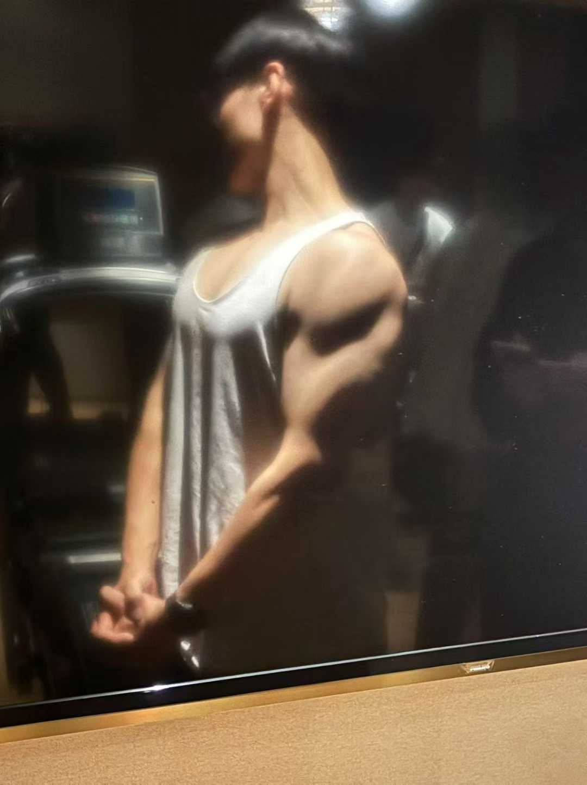

训练计划
- 背周一
- 胸周二
- 腿周三
- 休息周四
- 手 + 核心周五
- 休息周六
- 小臂 + 核心周五
歌单
音乐会跟着你在站内逛，切页面不会断(不支持谷歌和edge)
饮食
- 蛋白质160g
- 热量2200 kcal
体重
- 第一周89 kg
照片
别问为什么全网都用的同几张照片,本人实在是不会拍张,一张别人拍的一张拍了40分钟才好...

记录一些我平时的训练计划和吃的热量和蛋白质
return音乐会跟着你在站内逛，切页面不会断(不支持谷歌和edge)
别问为什么全网都用的同几张照片,本人实在是不会拍张,一张别人拍的一张拍了40分钟才好...
